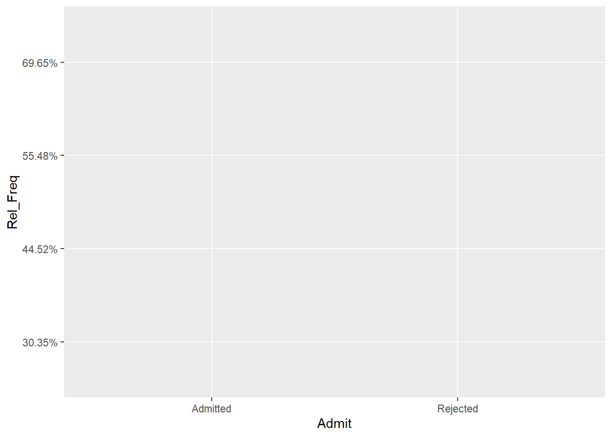
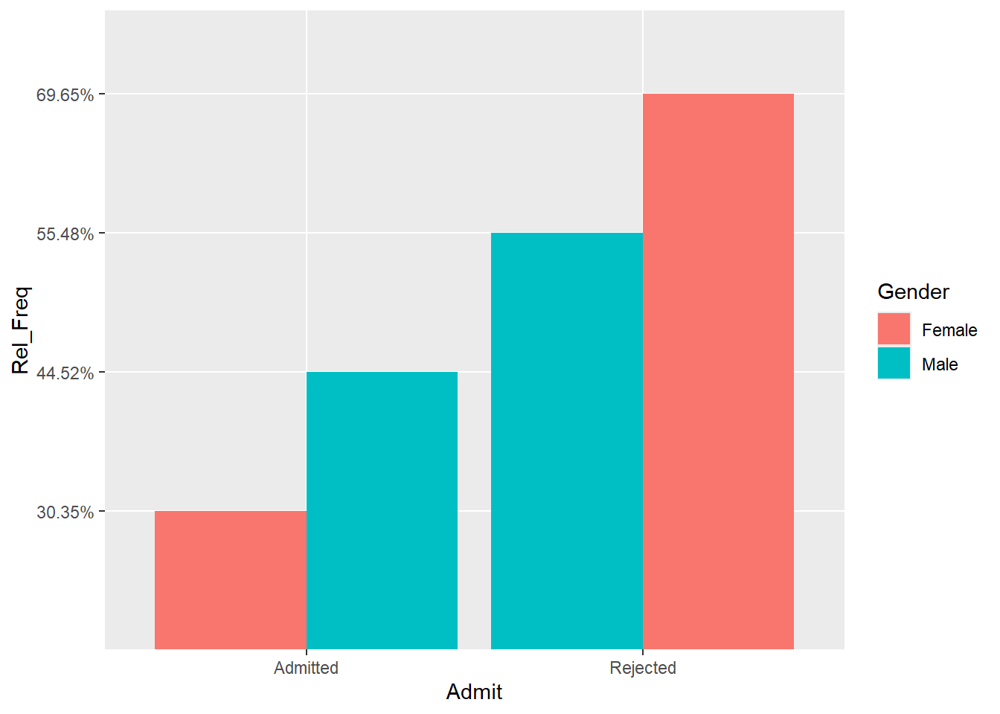
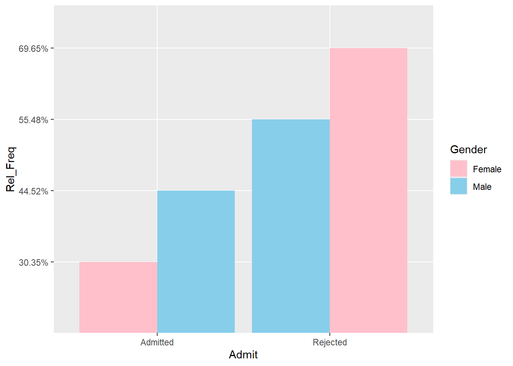
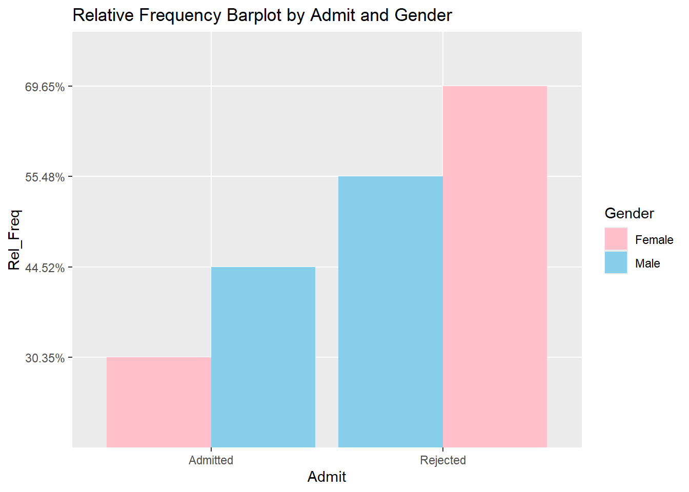
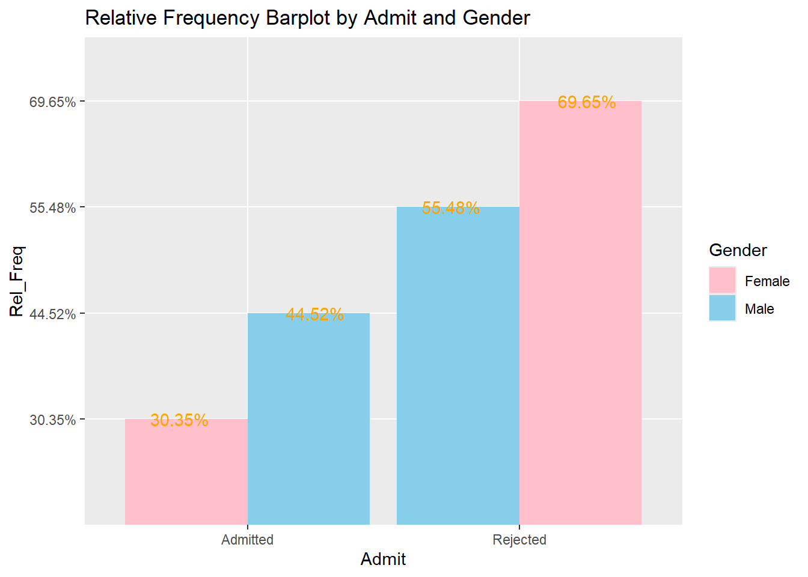
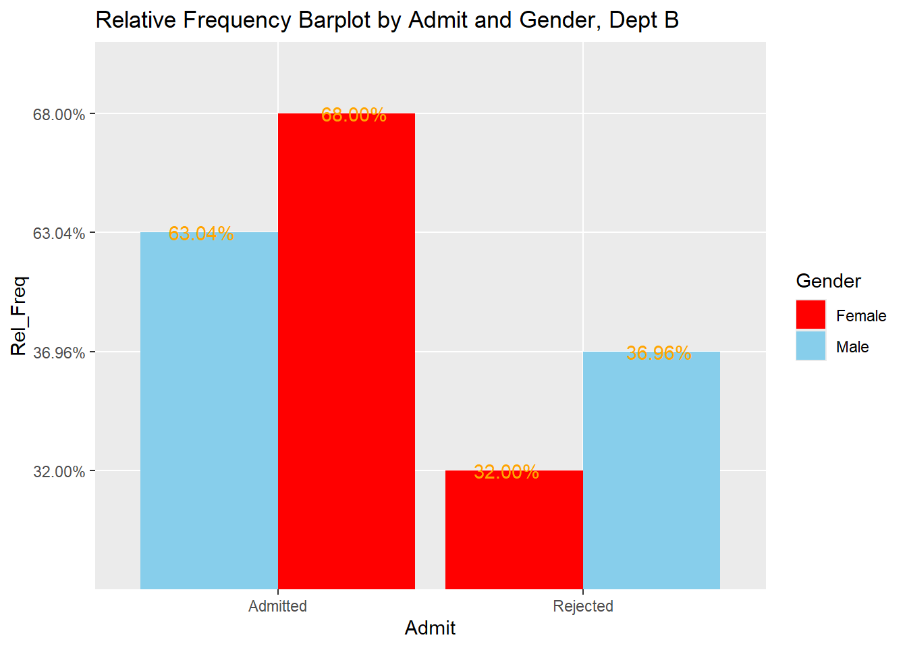
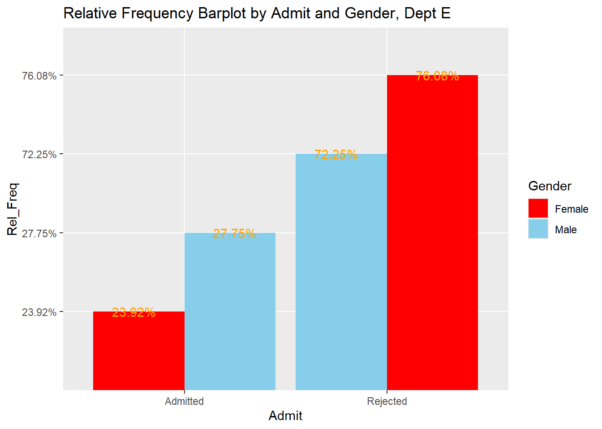
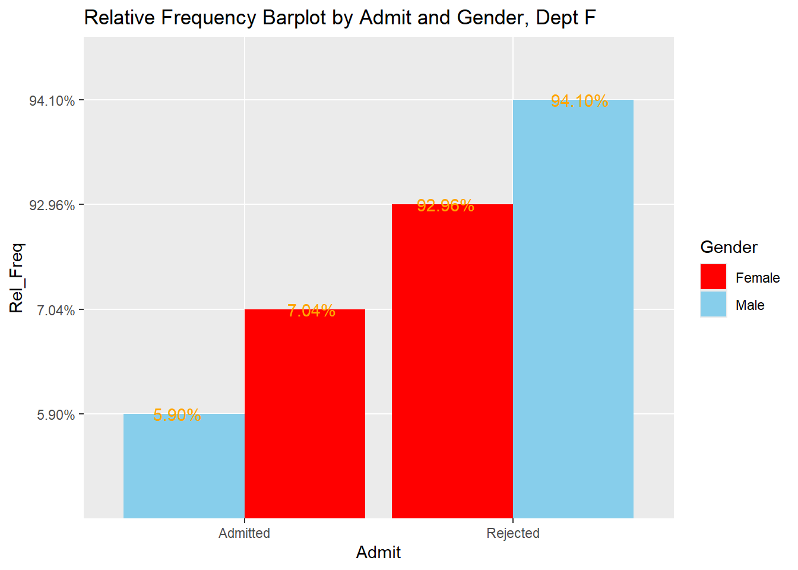
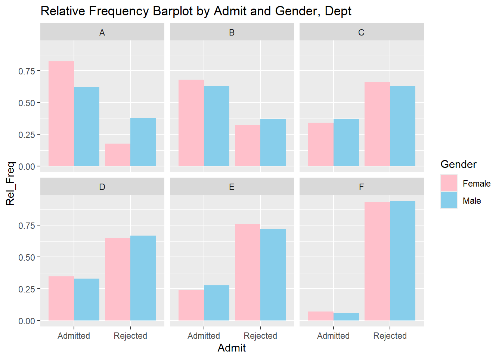

#install.packages("janitor") #btw, I don't really know why it is called "janitor", probably a good data cleaning tool??...Beginner R Tutorial: Exploratory Data Analysis with UCBAdmission1973 Dataset
What Is R?
R is ‘GNU S’, a freely available language and environment for statistical computing and graphics which provides a wide variety of statistical and graphical techniques: linear and nonlinear modelling, statistical tests, time series analysis, classification, clustering, etc. Please consult the R project homepage for further information. (https://cran.r-project.org/)
What Is This File?
This file is natively available as an html file, in other words, you should be able to open it with any modern internet browser. You won’t be able to execute any R code in the browser, but all outputs are already available to you in this document.
To create this file, I used something called Quarto Markdown Document. When you execute code within the notebook, the results appear beneath the code. Quarto is an open-source scientific and technical publishing system. It allows to embed codes and outputs in the same document, fantastic for researchers, scholars and educators!
What Are We Accomplishing Here?
In Microsoft Excel, we can perform a series of data manipulation, exploration and visualization tasks. As a bonus and complement, this is to provide some additional exposure to one of the most popular and powerful statistical and graphical solutions, yet COMPLETELY FREE, called R! We will doing a few tasks that resemble PivotTable functions and visualize some datapoints just like what we can accomplished with Microsoft Excel, but using R.
Performing Tasks with R Using UCBAdmission Dataset
Background
Name of the dataset: UCBAdmission
Description: Aggregate data on applicants to graduate school at Berkeley for the six largest departments in 1973 classified by admission and sex.
Detailed information: https://rdrr.io/r/datasets/UCBAdmissions.html
The official study: Sex Bias in Graduate Admissions: Data from Berkeley
Import libraries
Thousands of available libraries are what make R powerful. They are voluntarily developed by enthusiasts in the R community and you guessed it, there are many many many…. many of them. Consider libraries are different add-ons that you can plug-in to your workflow to get things done faster. And yes! These libraries are free, as well!!….
If a library is never used on the computer before, you do need to install it first and it is super easy to do with one line of code in R. For example:
After that you can just call it when you need it. I have many installed already, so I will just call all the ones needed for this tutorial. However, if you have not already installed these libraries, be sure to install them first.
library(janitor)
library(tidyverse)
library(ggplot2)
library(rpivotTable)Import data
In R environment, there are many illustrative datasets built in UCBAdmission is one of them.
To import data into a tabular format, called “data frame”. In particular, we will use a “flavour” of data frame called “tibble”.
Every time when you use “<-” to point at something (in this case “df”), that will refer to the object you assign it to. The following command allows “df” to refer to the tibble dataframe that we just created from UCBAdmissions built-in dataset.
df <- as_tibble(UCBAdmissions)Explore data
To see a few of top records.
head(df)To see the structure of data frame:
str(df)tibble [24 × 4] (S3: tbl_df/tbl/data.frame)
$ Admit : chr [1:24] "Admitted" "Rejected" "Admitted" "Rejected" ...
$ Gender: chr [1:24] "Male" "Male" "Female" "Female" ...
$ Dept : chr [1:24] "A" "A" "A" "A" ...
$ n : num [1:24] 512 313 89 19 353 207 17 8 120 205 ...To view the entire data frame, just run the object itself
dfCreate frequency and relative frequency tables
To create frequency tables by Gender and Admit. We will leverage the powerful and comprehensive data cleaning library called tidyverse. In fact, tidyverse is a collection library of a bunch of other libraries.
Note: “|>” is called “pipe operator”. You might also have seen a variant of pipe operator like this “%>%”. This operator allows the evaluated object from the current function(s) to be passed down as an input to a parameter of the next function. This is one of the great creations in R and really enables to simplify the codes and make the codes more readable. If you would like to read more about pipe operators in R, this is an excellent start: Pipelines in R.
For example, the following code can be interpreted like this in a more human English way:
- line 1: we would like to create a new object called admit_gender_pivot, starting with df object (keep in mind that “df” is the same tibble dataframe we just created above)
- line 2: and then, df will be grouped by “Admit” and “Gender” columns
- line 3: and then, the grouped df will be summarized to a new metric (column) called “Freg_Agg”, which is to sum of values in “n” column, and we will keep the grouping
- line 4: and then, ungroup the summarized tibble dataframe
- line 5: and finally, pivot the dataframe from line 4 to be a wider dataframe, by using the values in “Admit” column to be the new column names and aggregate values from “Freq_Agg” column.
admit_gender_pivot <- df |>
group_by(Admit, Gender) |>
summarise(Freq_Agg = sum(n), .groups = "keep") |>
ungroup() |>
pivot_wider(names_from = Admit, values_from = Freq_Agg)
admit_gender_pivotTo add totals, row/column titles, we use a function called “adorn_totals”, from a library called janitor, an excellent collection of helper tools to “clean up” the tables.
admit_gender_pivot_full <- admit_gender_pivot |>
adorn_totals(where = c("row", "col")) |>
# add as_tibble to enforce the output of adorn_totals to be tibble again
as_tibble()
admit_gender_pivot_fullTo see % of admission to gender total by each gender:
admit_gender_pivot_pct <- admit_gender_pivot |>
adorn_percentages("row") |>
# to round percentages decimal places to 2 places
adorn_pct_formatting(digits = 2) |>
as_tibble()
admit_gender_pivot_pctCreate bar plots for the relative frequency table
We start by creating an unpivoted (longer) relative frequency table. Essentially, this is the opposite of “pivot_wider”, as we will make the admission results headers to be a column by itself (Admit) and the measure (relative frequencies) will become its own column as well (Rel_Freq).
admit_gender_pct <- admit_gender_pivot_pct |>
pivot_longer(cols = c(Admitted, Rejected), names_to = "Admit", values_to = "Rel_Freq")
admit_gender_pctAnother great creation in R is a comprehensive graphics library ggplot2, based on Layered Grammar of grahics. It truly is powerful enough that it allows you to create any type of grahics, only limited by your imagination. We will use this exercise to build the basics of this grammar and ggplot2 package.
I hope by this point, you really appreciate what makes R so powerful are these thoughtfully curated libraries that can just “plug and play”.
There are layers when graphing with ggplot libaray.
The beginning layer is to create the canvas and then the 2nd layer is to assign each axis. You won’t be able to see Gender yet, because that will be shown as different colors the graphic is actually made and we haven’t told what graphics we want to create yet. So, patience, my friends.
ggplot(admit_gender_pct, mapping = aes(x=Admit, y=Rel_Freq, fill=Gender))
3rd layer is to plot the barplot for relative frequency. Now, with geom_bar, we are telling R to create a bar chart, and you will see
Note: the “+” sign functions just like ” |> “, an operator to connect from one function to another within ggplot2 library. Just a weird dialect specifically spoken mandated by ggplot2 creators if you will.
ggplot(admit_gender_pct, mapping = aes(x=Admit, y=Rel_Freq, fill=Gender))+
# stat="identity" means we want to use the data values just as they are without being summarized other ways
# position allows to specify different types of bars (stacked, dodged etc...)
geom_bar(stat="identity", position = 'dodge')
To demo manually change category colours, we can use “scale_fill_manual”
ggplot(admit_gender_pct, mapping = aes(x=Admit, y=Rel_Freq, fill=Gender))+
geom_bar(stat="identity", position = 'dodge')+
scale_fill_manual(values = c("Female" = "pink", "Male" = "skyblue"))
To add title for the barplot
ggplot(admit_gender_pct, mapping = aes(x=Admit, y=Rel_Freq, fill=Gender))+
geom_bar(stat="identity", position = 'dodge')+
scale_fill_manual(values = c("Female" = "pink", "Male" = "skyblue"))+
ggtitle("Relative Frequency Barplot by Admit and Gender")
To add data labels to each bar:
ggplot(admit_gender_pct, mapping = aes(x=Admit, y=Rel_Freq, fill=Gender))+
geom_bar(stat="identity", position = 'dodge')+
geom_text(aes(label = Rel_Freq), colour = "orange", position = position_dodge(width = 1), )+
scale_fill_manual(values = c("Female" = "pink", "Male" = "skyblue"))+
ggtitle("Relative Frequency Barplot by Admit and Gender")
Create relative frequency tables for each department
We repeat what we have done in “creating frequency and relative frequency table” section, but for each of the department
We will make an example with department A first:
admit_gender_pivot_DpetA <- df|>
filter(Dept=="A") |>
group_by(Admit, Gender) |>
summarise(Freq_Agg = sum(n), .groups = "keep") |>
pivot_wider(names_from = Admit, values_from = Freq_Agg)
admit_gender_pivot_DpetAThen similar to above, we will get relative frequencies.
admit_gender_pivot_DpetA |>
adorn_percentages("row") |>
adorn_pct_formatting(digits = 2) |>
as_tibble()If you think about it, we are really are just repeating these steps above for each department for each of the filtered subset. This is where we have to ask ourselves, “we are programming anyways, can we automate things?”
Usually, when this question rises, the answer is “yes”!, so let’s put our thinking hat on.
We want to “bundle” all of the data transform steps because they are consistent across all departments. We call this “bundle” a “function”, something that takes a input and returns an output. In fact, all of the things that you have seen thus far, like “filter”, ” group_by”, “summarize” etc… they are all functions! It’s that this time, we are writing a custome one ourselves.
We want to parameterize for different department values wherever we need to call out for that particular department. This really just a list of department values.
We “map” each department value as input to the same function, and then let the computer walk through the entire parameter series.
Okay, enough all this talk, let’s see that in action!
First, we need to create the function that does all of the data transformation and creating graphics. It sounds a lot, but we actually have all of the steps figured out, we just need to wrap them all in a function.
# we are creating a function called create_dept_relative_freq, which takes an input called "dept"
create_dept_relative_freq <- function(dept){
admit_gender_pivot_Dpet <- df |>
# this is where the "parameterize concept is applied, if we pass dept == "A" to this function, it will filter for just Dept A related rows, neat!!!
filter(Dept==dept) |>
# all of the following steps you have seen above, no surprises here
group_by(Admit, Gender) |>
summarise(Freq_Agg = sum(n), .groups = "keep")|>
pivot_wider(names_from = Admit, values_from = Freq_Agg)|>
adorn_percentages("row") |>
adorn_pct_formatting(digits = 2)|>
as_tibble()
# return specifies what output you would this function to yield. In this case, we would like to have the tranformed data frame of course...
return(admit_gender_pivot_Dpet)
}To get a list (vector) of departments, we can get “distinct” values from Dept column and then “pull”. All of these are courtesy of “tidyverse”.
dept_list <- df |>
distinct(Dept) |>
pull()
dept_list[1] "A" "B" "C" "D" "E" "F"Now, we need to have a mechanism to let R walk through all values in dept_list and pass each value to the same function. Once, again, courtesy of “tidyverse”, a function called “map” will take care of this for us… We will just chill and wait for the data frames!
Note: “~create_dept_relative_freq(.x)” means that we are taking each value found in dept_list object and pass them individually one after another to run the function create_dept_relative_freq. “.x” is simply the parameter placeholder for “dept” which represents one of “A”, “B”, “C”….
map(dept_list, ~create_dept_relative_freq(.x))[[1]]
# A tibble: 2 × 3
Gender Admitted Rejected
<chr> <chr> <chr>
1 Female 82.41% 17.59%
2 Male 62.06% 37.94%
[[2]]
# A tibble: 2 × 3
Gender Admitted Rejected
<chr> <chr> <chr>
1 Female 68.00% 32.00%
2 Male 63.04% 36.96%
[[3]]
# A tibble: 2 × 3
Gender Admitted Rejected
<chr> <chr> <chr>
1 Female 34.06% 65.94%
2 Male 36.92% 63.08%
[[4]]
# A tibble: 2 × 3
Gender Admitted Rejected
<chr> <chr> <chr>
1 Female 34.93% 65.07%
2 Male 33.09% 66.91%
[[5]]
# A tibble: 2 × 3
Gender Admitted Rejected
<chr> <chr> <chr>
1 Female 23.92% 76.08%
2 Male 27.75% 72.25%
[[6]]
# A tibble: 2 × 3
Gender Admitted Rejected
<chr> <chr> <chr>
1 Female 7.04% 92.96%
2 Male 5.90% 94.10% How neat!!!
Create a series of barplot for relative frequencies of admission by gender given a department
Okay, now you have a bit taste of creating relative frequencies for each department, you probably wonder: since we are creating the similar graphic grammar for all of the barplots, can we extend our function so that it is capable of creating graphics as well?
You betcha!!
# we are creating a function called create_dept_relative_freq, which takes an input called "dept"
create_dept_admit_relative_freq_bar <- function(dept){
# this part is exactly like what we have in create_dept_relative_freq function
admit_gender_barplot <- df |>
filter(Dept==dept) |>
# all of the following steps you have seen above, no surprises here
group_by(Admit, Gender) |>
summarise(Freq_Agg = sum(n), .groups = "keep") |>
pivot_wider(names_from = Admit, values_from = Freq_Agg) |>
adorn_percentages("row") |>
adorn_pct_formatting(digits = 2) |>
as_tibble() |>
pivot_longer(cols = c(Admitted, Rejected), names_to = "Admit", values_to = "Rel_Freq") |>
# and now we are stitching with the ggplot portion for that barplot
ggplot(mapping = aes(x=Admit, y=Rel_Freq, fill=Gender))+
geom_bar(stat="identity", position = 'dodge')+
geom_text(aes(label = Rel_Freq), colour = "orange", position = position_dodge(width = 1), )+
scale_fill_manual(values = c("Female" = "red", "Male" = "skyblue"))+
# "paste" function allows us to dynamically generate the title for the barplot. Think of it as some kind of magic glue that stick a variable or many variables after a fixed text value.
ggtitle(paste("Relative Frequency Barplot by Admit and Gender, Dept", dept))
# return specifies what output you would this function to yield. In this case, we would like to have the tranformed data frame of course...
return(admit_gender_barplot)
}
map(dept_list, create_dept_admit_relative_freq_bar)[[1]]
[[2]]
[[3]]
[[4]]
[[5]]
[[6]]
A much much fancier way to achieve the same:
This part is interesting: the relative frequency that we are seeking is each Freq out of total applicants of a particular gender to a particular Dept. Therefore, to get this subtotal in R, like before, we use “group_by” function from “tidyverse” library to find proper granularity level that we need. Then, we can simply use function called “mutate” (also from “tidyverse”) to get all of the relative frequencies that we need, by passing all of the summarize and pivot wider/longer process. “mutate” is just a go-to function to modify a tibble dataframe, such as changing values, adding a new column etc…
In this case, we need to group Dept and Gender.
df_subtotal <- df |>
group_by(Dept, Gender) |>
# we are creating a new column called "Freq_subtotal"
mutate(Freq_subtotal = sum(n)) |>
ungroup()
head(df_subtotal, 10)One more inch to go to create the Rel_Freq itself
df_rf <- df_subtotal %>%
group_by(Dept, Gender) |>
# we are creating a new column called "Freq_subtotal", notice how group_by enables to create the same subtotals as long as the values are the same for Dept and Gender, but not the same by Admit values
mutate(
Freq_subtotal = sum(n),
# we are creating the relative frequency column and round the decimal places to 4 decimal places
Rel_Freq = round(n/Freq_subtotal, digits = 4)
) |>
ungroup()
head(df_rf)I will also introduce a “fancy grammar” enabled from ggplot2, called “facet”. “facet” allows to create same graphics by distinct values of a data dimension and fit them all in the same graphic, instead of multiple individual graphics. This is a perfect use case for our scenario and enables to view all 6 departments side by side. I hope you get sense of the powerful graphic capability from R, particularly from ggplot2. This is something basic data analysis tool like Microsoft Excel not capable of easily accomplish.
ggplot(df_rf, mapping = aes(x=Admit, y=Rel_Freq, fill=Gender))+
geom_bar(stat="identity", position = "dodge")+
scale_fill_manual(values = c("Female" = "pink", "Male" = "skyblue"))+
facet_wrap(~ Dept)+
ggtitle("Relative Frequency Barplot by Admit and Gender, Dept")
Bonus Note: Pivot Table/Pivot Chart in R (rpivotTable), so to speak….
There is also a simple but gradually deprecated application to recreate the “pivot” experience from Microsoft Excel. This is the courtesy of “rpivotTable” library. It allows to drag and drop columns and to quickly create simple calculations. Feel free to try the following example yourself.
rpivotTable(data = df_rf, cols = c("Dept", "Admit"), rows = "Gender", vals = "Rel_Freq", aggregatorName = "Sum", rendererName = "Bar Chart")Closing
That’s it for this session… I hope you enjoy the content the same as much as I write it. Have a great day!!!